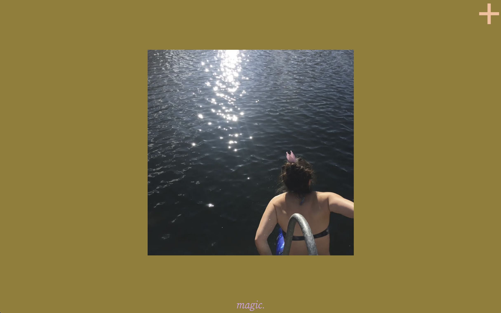
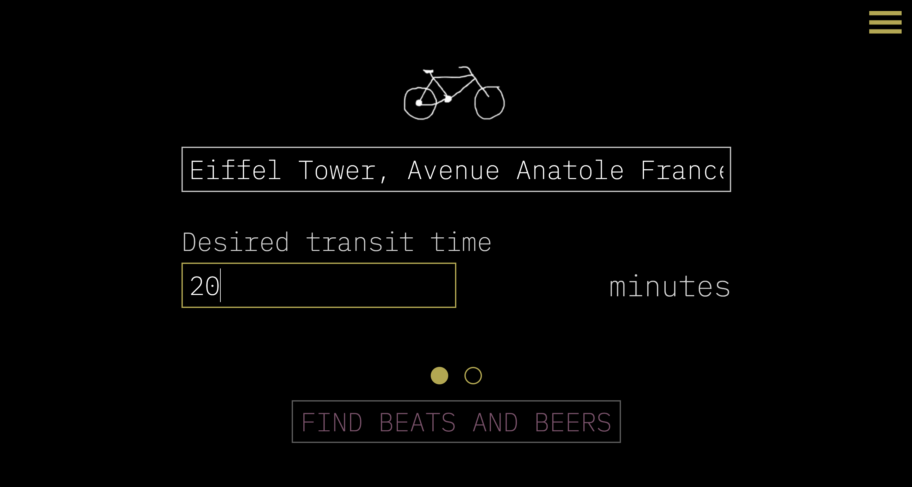

mångata ⚠️ typescript, next, prisma, mongodb, aws

bikes, beats, and brews typescript, next

no context typescript, react, express
BEAT C♡NNECTI♡N js, globe.gl, express

My Aunt's Kimchi Rules p5.js

MOODES chrome extension, p5.js